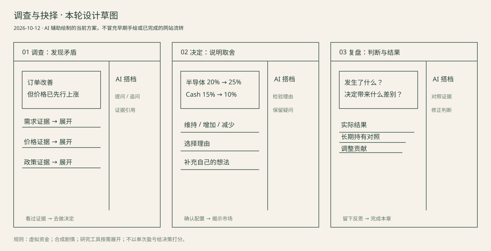

PROCESS / 2026-10-12
从信息面板，转向一次有依据的决定。
本轮先围绕“调查—决定—复盘”绘制草图，再实现可玩的首章。玩家面对一个矛盾，与研究搭档交流，用一次小幅配置表达判断。已有金融引擎继续负责计算，原有版本保留。

此图是本轮 AI 辅助绘制的方案草图，不是用户手绘，也不冒充过去的设计过程。主界面的晶圆插画为本项目原创 SVG。
| 课程流程 | 当前真实状态 |
|---|---|
| 本轮草图与独立可玩章节 | 本地文件可检查；试玩记录仅在实际发生后计入。 |
| Visily → Figma → Pixso | 待账号会话、导出权限与真实导入核验；本页不是已完成流转的证明。 |
| Softr 入口与反馈 | 待账号内配置；独立游戏入口尚未公网发布。 |
| 五名目标学生测试 | 未开展。“试玩记录”可设置单变量条件并导出本次记录。 |
合成游戏与历史方法练习不构成现实因子有效性证据。研究工具中的现实资料单独标注日期和来源。